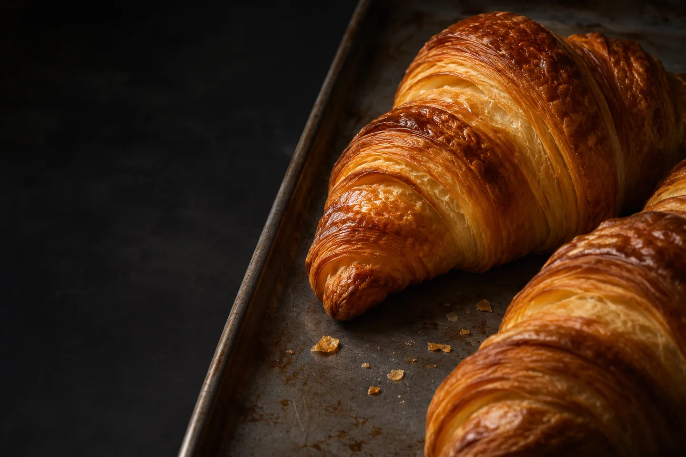

Samaref
Frío para el obrador
Empieza por el catálogo de pastelería y panadería de Samaref. Para valorar un equipo con EMAPAN, ten a mano el formato de bandeja, las tandas de tu turno más intenso y el espacio disponible.
Abrir el catálogo en español
Samaref
Del frío entre tandas a la conservación del producto terminado. Encuentra el punto de partida para tu obrador.
Samaref
Empieza por el catálogo de pastelería y panadería de Samaref. Para valorar un equipo con EMAPAN, ten a mano el formato de bandeja, las tandas de tu turno más intenso y el espacio disponible.
Abrir el catálogo en españolGuía de EMAPAN
¿En qué momento de la jornada necesitas frío? Estas tres referencias de catering y heladería ilustran necesidades distintas. Consulta con EMAPAN la versión vigente para tu obrador.
Abatimiento
Para el obrador que necesita bajar la temperatura de una elaboración antes de guardarla.
Aplicación documentada: heladería.
Ficha en Samaref (RU)¿Cuántos kilos entran por ciclo y a qué temperatura salen?
Consultar este equipoMesa refrigerada
Para el puesto de montaje que necesita tener a mano ingredientes refrigerados.
Aplicación documentada: catering.
Ficha en Samaref (RU)¿Qué recipientes utilizas y cuánto espacio de encimera necesitas?
Consultar este equipoArmario de congelación
Para una producción de heladería que necesita organizar el producto terminado.
Aplicación documentada: heladería.
Ficha en Samaref (RU)¿Qué formato de cubeta usas y cuántas necesitas guardar?
Consultar este equipoReferencias de equipo y enlaces de archivo recogidos por S-Prof. La gama de pastelería y panadería se consulta en el catálogo oficial en español.
Podrás revisar el mensaje en WhatsApp antes de enviarlo.